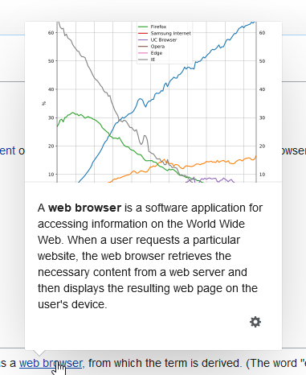

Types are painfully helpful
It is pretty usual when the collective and well-organised efforts of many peoples outperform abilities of a regular person. The typescript illustrates the idea routinely. The warnings and errors it raises in places which, initially I couldn't agree with, after a time of frustration bestow me a refined understanding of a code I wrote.
A recent encounter with the type checking was pretty simple to describe it here with all important details, but yet in short.
Let's say we want to show the tooltips like the one from the below in different places of a certain site.

For the sake of maintainability it is safer to have a facade for a library used to manage tooltip positioning in different situations.
import { TooltipLibrary } from 'tooltip-library';
interface TooltipInstance {
new(trigger: HTMLElement, content: string, options: {event: string}): void;
show(): void;
hide(): void;
changeContent(content: string): void;
destroy(): void;
}
class TooltipFacade {
private tooltip: TooltipInstance;
private static getHTMLElement(selector: string): HTMLElement | null {
return document.querySelector(selector);
}
public constructor(
selector: string,
content: string,
options: { event: string } = { event: 'mouseover' }
) {
const trigger = TooltipFacade.getHTMLElement(selector);
if (trigger === null) {
throw Error('No element found');
}
this.tooltip = new TooltipLibrary(trigger, content, options);
}
public changeContent(content: string): void {
this.tooltip.changeContent(content);
}
// ... other methods
}
We can get a null from querySelector and have to handle it, otherwise, we will get an exception from a library. But wait. Why do we need to throw the exception to avoid an exception? Why do we need an exception?
The tooltips aren't a critical part of our application. We may run without them and the users, possibly, won't even notice anything strange. It means we can replace the error throwing with a logging an error to help developers to identify the problem faster.
// TooltipFacade.constructor
const trigger = TooltipFacade.getHTMLElement(selector);
if (trigger === null) {
console.error('No element found');
return;
}
this.tooltip = new TooltipLibrary(trigger, content, options);
Now the users of our facade are safe if the page is changed in a way they are not aware. There is no risk for them to get unhandled exception out of nowhere. That is how I was thinking out of the box. But the typescript was not agreed with the idea of mine.
class TooltipFacade {
// ERROR: Property 'tooltip' has no initializer and is not definitely assigned in the constructor.
private tooltip: TooltipInstance;
// ...
}
Why? Why typescript need a tooltip not null. No one needs the method because there is no related HTML element so why the typescript is so rigid on us. It is unfair. Why smarter than a mere code compiler. We'll trick it.
class TooltipFacade {
private tooltip: TooltipInstance | null = null;
}
And, of course it won't work.
class TooltipFacade {
// ...
public changeContent(content: string): void {
// Object is possibly 'null'.
this.tooltip.changeContent(content);
}
}
What? How it can be. I see the constructor clearly. The this.tooltip set with a TooltipInstance. How on Earth it could be null. How?! You are kidding me, typescript, right?
// TooltipFacade.constructor
this.tooltip = new TooltipLibrary(trigger, content, options);
It took a lot of me on running in circles before typescript reached me with its warnings. We have hidden the runtime problem from the callers of our API. And that is why they will call the methods of our facade no matter what, either we have an element on a page or we don't. And this is why typescript was trying to inform me about the problems.